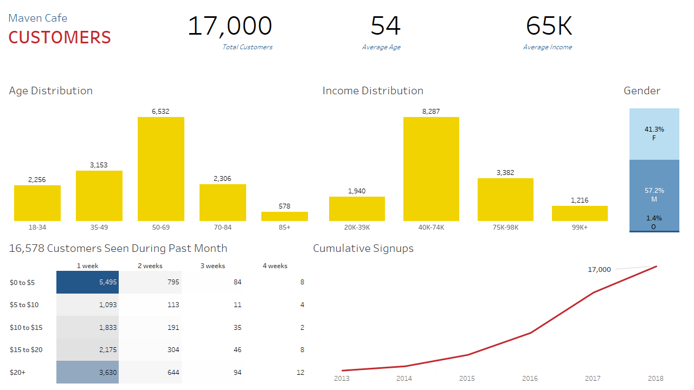
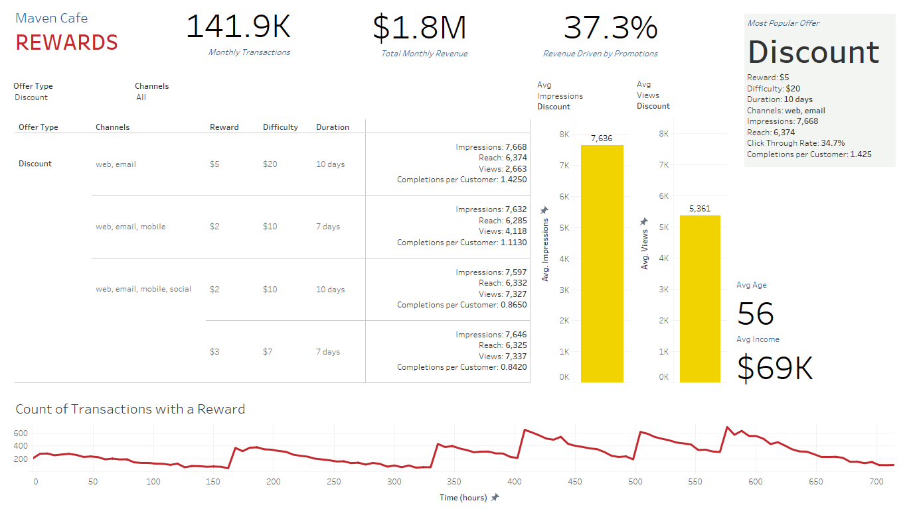

Cafe Rewards Offers
Data that simulates the behavior of Cafe Rewards members over a 30-day period, including their transactions and responses to promotional offers.
Customers receive offers once every few days and have a limited time to redeem them. These can be informational offers (simple advertisement of a product), discount offers, or “buy one, get one” (BOGO) offers. Each customer receives a different mix of offers, attempting to maximize their probability of making a purchase.
Every customer purchase during the period is marked as a transaction. For a transaction to be attributed to an offer, it must occur at the same time as when the offer was “completed” by the customer.
Tableau Dashboards
Customer Dashboard

Rewards Dashboard

Data Source
Description
Business need
- The business uses promotions to draw customers to cafes and needs to quantify how well these promotions working by looking at the revenue they drive and the customers they attract.
Goals
- Find the most successful promotions so that similar offerings can be made in the future.
Insights
- The rewards program is very successful! There were 141.9K transactions, $1.8M in monthly revenue, with 37.3% of that revenue coming from transactions in which a reward was redeemed.
- The most popular offer was $5 discount on a $20 purchase that could be redeemed up to 10 days after viewing by the customer. The offer was sent via web and email channels. There were 1.4 completions of this reward per customer, indicating that many customers redeemed the offer multiple times.
- Across BOGO and discount offers, the average age of the customer completing the offer was 56 (compared to an average of 54 across all customers) with an income of $69K-$70K (compared to an average of 64K for all customers).
- Transaction counts appear to spike when rewards are announced throughout the month.
- The dataset contains a total of 17,000 customers, with an average age of 54 years and average income of $65K.
- Most customers fall within the 50 to 69 year age bracket and $40K-$74K income range. 57.2% of the customers identify as male, 41.3% as female, and 1.4% as other.
- Customers in the dataset enrolled as part of the rewards program starting in 2013 and ending in 2018.
- Most of the customers in the month spent $5 or less or $20 or more and were seen within the last week.
Recommendation
- Target customers not seen in 2 weeks with offers of a $5 discount redeemable on purchases of $20 or more.
A note about “Completions per Viewing Customer”
Unlike a conversion rate, where an offer can only have one completion, the offers in this dataset could be completed more than once per customer. Certain offers were completed up to 4 times by one customer! So I needed another metric to compare offer performance. “Completions per customer” is the total number of offer completions divided by the count of the distinct customers that viewed the offer. A value of 1 would mean that every customer that viewed the offer completed it once. A value greater than 1 means that some customers completed the offer multiple times, and a value less than 1 means that not all viewing customers completed the offer.
Tools Used
- PostgreSQL
- Tableau